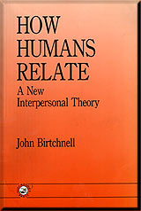
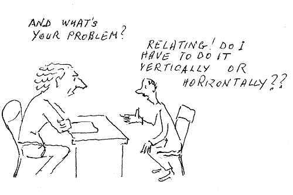
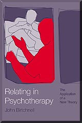
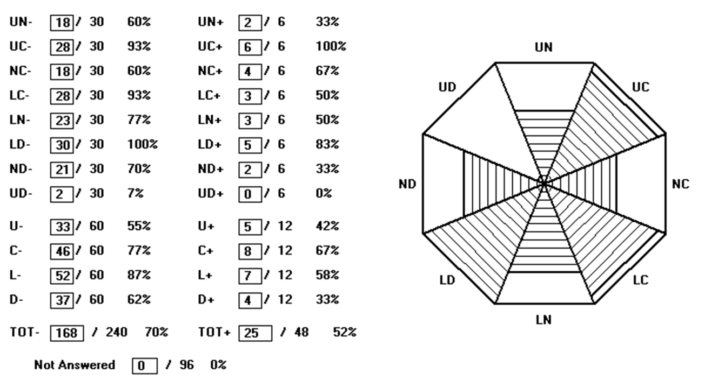
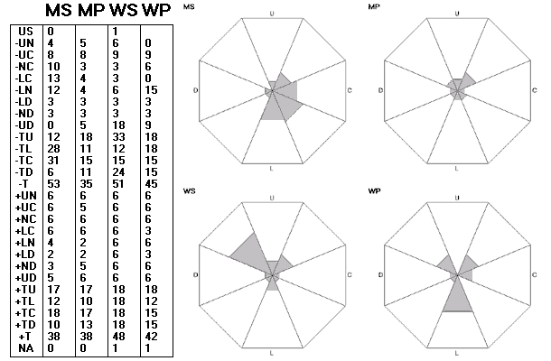
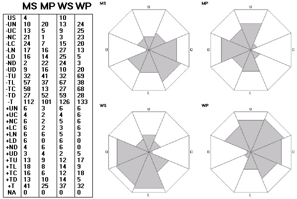

Η Θεωρία του Σχετίζεσθαι
Η Θεωρία του Σχετίζεσθαι
Το σχετίζεσθαι (relating) είναι αυτό που κάνει ένα άτομο σε ένα άλλο ή σε άλλους, επομένως αποτελεί χαρακτηριστικό του ατόμου. Μπορεί να αφορά εξίσου ό,τι συμβαίνει σε μια στιγμή όσο και ό,τι συμβαίνει κατά τη διάρκεια μιας ολόκληρης ζωής· έτσι, το να προσφέρεις σε κάποιον μια θέση στο λεωφορείο είναι το ίδιο σχετίζεσθαι με το να είσαι ένας άνθρωπος που περνάει τη ζωή του έχοντας την ανάγκη να βοηθάει τους άλλους. Ένα άτομο μπορεί να σχετίζεται εξίσου τόσο με εσωτερικευμένους ανθρώπους (στο μυαλό του) όσο και με ανθρώπους στον πραγματικό κόσμο. Ο Birtchnell έγραψε στο βιβλίο του (1993/96a) ότι το σχετίζεσθαι είναι τόσο ουσιαστικό μέρος της ύπαρξής μας, που δεν σταματάμε ποτέ να το κάνουμε, ακριβώς όπως η καρδιά μας δεν σταματά ποτέ να χτυπά.
Η θεωρία του σχετίζεσθαι, η οποία παλαιότερα ονομαζόταν χωρική θεωρία (spatial theory), άρχισε να διαμορφώνεται στα τέλη της δεκαετίας του 1980. Προέκυψε μέσα από προβληματισμούς γύρω από τη φύση της ψυχολογικής εξάρτησης. Η σύνδεσή της με την ψυχολογική εξάρτηση ήταν εμφανής σε μια πρώιμη μορφή της (Birtchnell, 1987). Αναπτύχθηκε κατά την περίοδο που ο Birtchnell είχε συχνή επαφή με τον John Bowlby, και μια άλλη καθοριστική επιρροή ήταν η προσπάθειά του να τραβήξει μια σαφή διαχωριστική γραμμή ανάμεσα στη δική του θεωρία και τη θεωρία του δεσμού (attachment theory) (βλ. Birtchnell, 1997a). Ο Bowlby πέθανε το 1990. Ήδη από το 1991, ο Καθηγητής Russell Gardner είχε γράψει: «Το χωρικό σχήμα του Δρ. Birtchnell έχει σημαντικές προοπτικές για την ανάλυση δεδομένων στις διαπροσωπικές σχέσεις». Ήταν ο Maurice Lorr (προσωπική επικοινωνία, 1987) που πρώτος του επισήμανε την ομοιότητά της με τη διαπροσωπική θεωρία (interpersonal theory), μια θεωρία που και ο ίδιος είχε βοηθήσει να αναπτυχθεί (Lorr & McNair, 1963). Σε δύο εργασίες του (Birtchnell, 1990 και Birtchnell, 1994) περιέγραψε τις διαφορές ανάμεσα στη δική του θεωρία και τη διαπροσωπική θεωρία. Η χωρική θεωρία, όπως ονομαζόταν τότε, αναπτύχθηκε πλήρως για πρώτη φορά στο βιβλίο του, How Humans Relate: A New Interpersonal Theory, το οποίο εκδόθηκε αρχικά με σκληρό εξώφυλλο (Birtchnell, 1993) και αργότερα με μαλακό εξώφυλλο (Birtchnell, 1996a).

ΠΕΡΙΕΧΟΜΕΝΑ ΒΙΒΛΙΟΥ:
- Το σχετίζεσθαι: Μερικές γενικές αρχές
- Οι δύο άξονες του σχετίζεσθαι
- Περαιτέρω ανάπτυξη των δύο αξόνων
- Διαδικασίες ωρίμανσης στους δύο άξονες
- Εγγύτητα (Closeness)
- Απόσταση (Distance)
- Ανωτερότητα (Upperness)
- Κατωτερότητα (Lowerness)
- Το διαπροσωπικό οκτάγωνο
- Ο διαπροσωπικός κύκλος
- Συμπέρασμα
Για τη θεωρία αυτή, ο Καθηγητής A.T. Beck (Φιλαδέλφεια) έγραψε (στο ενημερωτικό δελτίο ASCAP, 1994): «Είμαι πεπεισμένος ότι ο John Birtchnell έχει ανακαλύψει κάτι σημαντικό όσον αφορά τους κάθετους και οριζόντιους άξονές του.» Ο Καθηγητής Paul Gilbert έγραψε: «Του αξίζουν συγχαρητήρια που συγκέντρωσε μια τόσο ποικιλόμορφη βιβλιογραφία και έριξε νέο φως στην πολυπλοκότητα των ανθρώπινων σχέσεων.» (Και τα δύο παραθέματα βρίσκονται στο εξώφυλλο της έκδοσης με μαλακό εξώφυλλο). Ο Καθηγητής Russell Gardner (Τέξας) έγραψε, στον Πρόλογο του βιβλίου: «Μέχρι τώρα δεν είχαμε κανένα ολοκληρωμένο σύστημα για την οργάνωση και τη συστηματοποίηση των επικοινωνιακών χαρακτηριστικών των ανθρώπων.» Ο Denis Trent (1994) σε μια κριτική του βιβλίου, έγραψε: «Η θεωρία του Birtchnell είναι περιεκτική και καλά μελετημένη. Κρυμμένη μέσα στο περιεχόμενο, ωστόσο, βρίσκεται η ικανότητά του να παρουσιάζει μια εξαιρετικά περίπλοκη και καλά ενσωματωμένη θεωρία με ένα σαφές και εύκολα κατανοητό ύφος.» Η Carolyn Reichelt (1994) έγραψε: «Όταν το χωρικό μοντέλο του John Birtchnell για το σχετίζεσθαι εμφανίστηκε για πρώτη φορά στο ενημερωτικό δελτίο ASCAP, ήμουν κάπως επιφυλακτική. Υποφέρω από μια προκατάληψη ενάντια στην προσπάθεια να στριμώξω την πολυπλοκότητα του ανθρώπινου πνεύματος σε μικρά κουτάκια. Αλλά σε αυτήν την περίπτωση, περαιτέρω δοκίμια μου είχαν κεντρίσει όλο και περισσότερο το ενδιαφέρον, έτσι ώστε όταν με πήραν τηλέφωνο και με ρώτησαν αν θα ήθελα να κάνω κριτική στο βιβλίο, συμφώνησα. Φαινόταν ότι άξιζε τον κόπο να δω αν μια πλήρης παρουσίαση της θεωρίας θα ήταν αρκετά πειστική για να καταπνίξει τις υπόλοιπες αμφιβολίες μου. Χαίρομαι που το έκανα, γιατί θα είχα χάσει ένα απολαυστικό και συναρπαστικό ανάγνωσμα αν είχα αρνηθεί. Συνιστώ αυτό το βιβλίο σε όποιον ενδιαφέρεται για τα ανθρώπινα συναισθήματα και τις αλληλεπιδράσεις· όχι μόνο σε επαγγελματίες, αλλά σε οποιονδήποτε έξυπνο αναγνώστη.»
Τα βασικά στοιχεία της θεωρίας του σχετίζεσθαι
- Το σχετίζεσθαι λαμβάνει χώρα κατά μήκος δύο τεμνόμενων αξόνων: ενός οριζόντιου, που αφορά την ανάγκη για εμπλοκή με τους άλλους (εγγύτητα) έναντι της ανάγκης για διαχωρισμό (απόσταση), και ενός κάθετου, που αφορά την ανάγκη για σχετίζεσθαι από πάνω προς τα κάτω (ανωτερότητα) έναντι της ανάγκης για σχετίζεσθαι από κάτω προς τα πάνω (κατωτερότητα).
- Η θεωρία προτείνει τέσσερις καταστάσεις σχέσης (states of relatedness): ανώτερη εγγύτητα, κατώτερη εγγύτητα, ανώτερη απόσταση και κατώτερη απόσταση.
- Τα συναισθήματα μας μεταφέρουν το αν βρισκόμαστε σε σωστή πορεία για την επίτευξη και τη διατήρηση αυτών των καταστάσεων σχέσης.
- Αν και γεννιόμαστε με έμφυτες προδιαθέσεις για τις τέσσερις καταστάσεις σχέσης, χρειάζεται κατά τη διάρκεια της ωρίμανσής μας να αναπτύξουμε επάρκεια στην επίτευξη και διατήρηση καθεμίας από αυτές.
- Ένα άτομο που έχει επάρκεια σε όλες τις καταστάσεις σχέσης ονομάζεται ευέλικτο (versatile).
- Το επαρκές σχετίζεσθαι ονομάζεται θετικό, ενώ το σχετίζεσθαι που υπολείπεται σε επάρκεια ονομάζεται αρνητικό. Ένας από τους στόχους της ψυχοθεραπείας είναι η εξάλειψη του αρνητικού σχετίζεσθαι.
- Υπάρχουν τέσσερις ενδιάμεσες καταστάσεις που προκύπτουν από τη μίξη μιας οριζόντιας και μιας κάθετης κατάστασης. Αυτές ονομάζονται ανώτερη εγγύτητα, κατώτερη εγγύτητα, ανώτερη απόσταση και κατώτερη απόσταση. Οι τέσσερις καθαρές καταστάσεις (που ονομάζονται ουδέτερες) και οι τέσσερις ενδιάμεσες καταστάσεις οργανώνονται σε μια θεωρητική δομή που ονομάζεται διαπροσωπικό οκτάγωνο (interpersonal octagon).
Το να σχετίζονται οι άλλοι μαζί σου (Being related to)
Όπως ακριβώς σχετιζόμαστε με τους ανθρώπους όλη την ώρα, έτσι και οι άλλοι σχετίζονται μαζί μας όλη την ώρα. Δεν γνωρίζουμε πάντα ότι κάποιοι σχετίζονται μαζί μας. Μια διασημότητα αγνοεί όλα τα συναισθήματα που τρέφουν κάθε λογής άνθρωποι γι' αυτήν. Ό,τι ισχύει για το σχετίζεσθαι, ισχύει και για το να σχετίζονται οι άλλοι μαζί σου. Μπορεί να αφορά εξίσου ό,τι συμβαίνει σε μια στιγμή, όσο και ό,τι συμβαίνει κατά τη διάρκεια μιας ζωής. Μπορεί να αφορά εξίσου εσωτερικευμένους ανθρώπους όσο και ανθρώπους στον πραγματικό κόσμο. Οι άνθρωποι μπορούν να επηρεαστούν βαθιά από τον τρόπο που ορισμένοι άλλοι σχετίζονται μαζί τους. Το να σχετίζεσαι και το να σχετίζονται μαζί σου συνδυάζονται στη διαδικασία της αλληλεπίδρασης (interrelating), και το CREOQ (βλ. παρακάτω), το οποίο μετρά την αλληλεπίδραση, διαθέτει ξεχωριστές κλίμακες μέτρησης για το καθένα.
Κατηγορίες αρνητικού σχετίζεσθαι
Οι κατηγορίες αρνητικού σχετίζεσθαι αποτελούν μορφές ανεπάρκειας στο σχετίζεσθαι. Εφόσον οι άνθρωποι έχουν ανάγκη να σχετίζονται προκειμένου να επιτύχουν επιθυμητές καταστάσεις σχέσης, αν δεν μπορούν να σχετιστούν επαρκώς για να τις πετύχουν, θα σχετιστούν ανεπαρκώς για να το καταφέρουν. Οι τρεις κύριες μορφές αρνητικού σχετίζεσθαι ονομάζονται: αποφευκτική, ανασφαλής και απεγνωσμένη. Στο αποφευκτικό σχετίζεσθαι, το άτομο φοβάται τόσο πολύ μια συγκεκριμένη κατάσταση σχέσης, που προσκολλάται απεγνωσμένα στην αντίθετη κατάσταση. Έτσι, ένα άτομο που φοβάται την εγγύτητα προσκολλάται στην απόσταση. Το ανασφαλές σχετίζεσθαι σημαίνει ότι το άτομο προσπαθεί να επιτύχει ή να διατηρήσει μια συγκεκριμένη κατάσταση, αλλά φοβάται συνεχώς ότι
Το Σχετίζεσθαι στην Ψυχοθεραπεία (Relating in Psychotherapy)

Αυτός είναι ο τίτλος του βιβλίου του που εκδόθηκε για πρώτη φορά (από τον εκδοτικό οίκο Praeger) με σκληρό εξώφυλλο το 1999 και κυκλοφόρησε (από την Brunner-Routledge) με μαλακό εξώφυλλο τον Μάιο του 2002. Ο σκοπός του βιβλίου είναι να εφαρμόσει τη θεωρία του σχετίζεσθαι (βλ. ενότητα για τη Θεωρία του Σχετίζεσθαι) σε όσα συμβαίνουν κατά τη διάρκεια της ψυχοθεραπείας. Κεφάλαια που περιγράφουν τη θεωρία του σχετίζεσθαι εναλλάσσονται με κεφάλαια που περιγράφουν πώς η θεωρία μπορεί να εφαρμοστεί στο σχετίζεσθαι διαφορετικών τύπων ψυχοθεραπευτών καθώς και διαφορετικών τύπων θεραπευόμενων. Το Κεφάλαιο 9 περιγράφει τα ερωτηματολόγια για τη μέτρηση του σχετίζεσθαι και της αλληλεπίδρασης (βλ. ενότητα Μετρήσεις του Σχετίζεσθαι και της Αλληλεπίδρασης) και υποδεικνύει πώς αυτά μπορούν να χρησιμοποιηθούν στην αρχική αξιολόγηση του θεραπευόμενου, ή του ζευγαριού που αναζητά θεραπεία ζεύγους, καθώς και για την αξιολόγηση της βελτίωσης σε διάφορα στάδια της θεραπείας και στο τέλος της.
Πρέπει να τονιστεί ότι, είτε ο θεραπευτής και ο θεραπευόμενος το συνειδητοποιούν είτε όχι, και ανεξάρτητα από τη μορφή θεραπείας που χρησιμοποιείται, το σχετίζεσθαι αποτελεί ένα μεγάλο μέρος αυτού που συζητείται στη θεραπεία, και τα ελλείμματα στο σχετίζεσθαι διορθώνονται κατά τη διάρκεια της θεραπείας.
Προς το τέλος του βιβλίου αναδύεται ο όρος «θεραπεία του σχετίζεσθαι» (relating therapy), για να αναφερθεί σε μια μορφή ψυχοθεραπείας στην οποία ο θεραπευτής και ο θεραπευόμενος (ή ένα ζευγάρι) εργάζονται συνεργατικά για να διορθώσουν συγκεκριμένες ανεπάρκειες στο σχετίζεσθαι. Στη θεραπεία του σχετίζεσθαι, περισσότερο από ό,τι σε άλλες μορφές θεραπείας, δίνεται έμφαση στον ρόλο που παίζει το σχετίζεσθαι των άλλων απέναντι στον θεραπευόμενο, και εξηγείται η κυκλική φύση του "σχετίζεσθαι" και του "να σχετίζονται μαζί σου". Ο θεραπευόμενος βοηθιέται να επινοήσει στρατηγικές για την αντιμετώπιση του αρνητικού σχετίζεσθαι ορισμένων σημαντικών άλλων απέναντί του, ή μπορεί ακόμη και να συμβουλευτεί να περιορίσει την εμπλοκή του με αυτούς τους σημαντικούς άλλους.
Αναπόσπαστο συστατικό της θεραπείας του σχετίζεσθαι είναι η χρήση ενός εργαλείου μέτρησης (βλ. ενότητα για τις Μετρήσεις του Σχετίζεσθαι και της Αλληλεπίδρασης) για την υπόδειξη περιοχών ανεπάρκειας και τη συνεχή παρακολούθηση των αλλαγών.

ΠΕΡΙΕΧΟΜΕΝΑ ΒΙΒΛΙΟΥ:
- Το σχετίζεσθαι και η συνάφειά του με την ψυχοθεραπεία
- Ο εσωτερικός εγκέφαλος και ο εξωτερικός εγκέφαλος
- Ο άξονας της εγγύτητας (proximity) στο σχετίζεσθαι
- Ο άξονας της εγγύτητας στην ψυχοθεραπεία
- Ο άξονας της ισχύος (power) στο σχετίζεσθαι
- Ο άξονας της ισχύος στην ψυχοθεραπεία
- Η αλληλεπίδραση (Interrelating)
- Η αλληλεπίδραση στην ψυχοθεραπεία
- Μέτρηση του σχετίζεσθαι και της αλληλεπίδρασης στην ψυχοθεραπεία
- Η ανάδυση μιας νέας προσέγγισης στην ψυχοθεραπεία
Το βιβλίο έτυχε θερμής υποδοχής:
Ο Δρ. Derry Macdiarmid, Senior Fellow στην Ψυχοθεραπεία στην Ιατρική Σχολή του Guy's Hospital, Λονδίνο, έγραψε: «Αυτό είναι ένα πολύ πλούσιο βιβλίο...μια θαυμάσια σύνοψη ενός πολύ μεγάλου φάσματος προσεγγίσεων...ένα σημαντικό βήμα προς τα εμπρός στην ενσωμάτωση των ψυχοθεραπειών...μια μεγάλη ευχαρίστηση να το διαβάζει κανείς, ειδικά λόγω του πλούτου της ανθρώπινης παρατήρησης που ενσωματώνει».
Η Tirril Harris (2000), Senior Research Fellow στο Κοινωνικο-Ιατρικό Ερευνητικό Κέντρο της Ιατρικής Σχολής των Guy's, Kings and St Thomas', Λονδίνο, έγραψε: «Αυτό που ανταμείβει σε αυτό το βιβλίο είναι η δομική σαφήνεια και η απλότητα της οπτικής του - κάτι πολύ πιο εύκολο να χρησιμοποιηθεί με θεραπευόμενους σε σύγκριση με τη συνήθη ψυχοδυναμική ορολογία...παρά την προφανή προέλευσή του στο ακαδημαϊκό πεδίο της ψυχολογικής θεωρίας και της ψυχομετρικής μέτρησης, το βιβλίο εκτιμάται ακόμη περισσότερο ως ένα εγχειρίδιο για την ίδια την τέχνη της ψυχοθεραπείας».
Η Δρ. Jill Savege Scharff (2000), από το Διεθνές Ινστιτούτο Θεραπείας Αντικειμενοτρόπων Σχέσεων στην Ουάσιγκτον, έγραψε: «Για ατομικούς, ομαδικούς, οικογενειακούς θεραπευτές και θεραπευτές ζεύγους, το "Relating in Psychotherapy" κάνει εξαιρετική δουλειά παρέχοντας μια θεωρία που βοηθά στη σκέψη γύρω από δύο σημαντικές πτυχές των ανθρώπινων σχέσεων, στη μέτρηση των δυσκολιών σε αυτούς τους τομείς, και στην παροχή μιας ψυχοθεραπευτικής προσέγγισης που εφαρμόζεται σε πολλές μορφές και το αποτέλεσμα της οποίας είναι μετρήσιμο. Πάνω απ' όλα, αυτό το βιβλίο ενδυναμώνει τους κλινικούς να κάνουν τη δική τους έρευνα για την κλινική έκβαση, γεγονός που μπορεί να αποκαταστήσει την εμπιστοσύνη στη μεθοδολογία τους, σε μια εποχή που η αποτελεσματικότητά της αμφισβητείται από μια κοινωνία που τείνει να επιλέγει τη φαρμακευτική αγωγή αντί για την ψυχοθεραπεία».
Ο Δρ. Anthony Bateman (2000), Γραμματέας της Σχολής Ψυχοθεραπείας του Βασιλικού Κολλεγίου Ψυχιάτρων, έγραψε: «Το βιβλίο διαβάζεται εύκολα, είναι καλά δομημένο και καταδεικνύει την ευρεία γνώση του συγγραφέα για διάφορες ψυχοθεραπείες... Ο συγγραφέας αξίζει συγχαρητήρια για το επίπονο έργο του στην ανάπτυξη μιας θεωρίας, την εφαρμογή της στην πράξη και την παραγωγή ουσιαστικών μετρήσεων. Πρόκειται για μια εντυπωσιακή προσπάθεια δημιουργίας μιας τεκμηριωμένης (evidence-based) ψυχοθεραπείας».
Ο Δρ. Dale Mathers (2001), της Διεθνούς Ένωσης Αναλυτικής Ψυχολογίας, έγραψε: «Σας συνιστώ αυτό το βιβλίο. Η θεωρία διαπερνά όλες τις μορφές (σχολές) θεραπείας και αποτελεί έναν τρόπο περιγραφής κάθε σχολής με όρους του σχετίζεσθαι, τόσο από την πλευρά του θεραπευόμενου όσο και του θεραπευτή... Ελπίζω ότι θα διαβαστεί ευρέως».
Αναφορές
Beck, A.T. (1994) Letters The ASCAP Newsletter, Volume 7 No 2, 4-5
Birtchnell, J. (1987) Αποσύνδεση προσκόλλησης, δεκτικότητα κατευθυντικότητας: Ένα σύστημα ταξινόμησης διαπροσωπικών στάσεων και συμπεριφοράς. British Journal of Medical Psychology, 60, 17 27.
Birtchnell, J. (1990) Διαπροσωπική θεωρία: Κριτική, τροποποίηση και επεξεργασία. Human Relations, 43, 1183-1201.
Birtchnell, J. (1993) How Humans Relate: A New Interpersonal Theory. Ένας τόμος της σειράς Human Evolution, Behavior & Intelligence. Praeger: Westport, CT. Χαρτόδετη έκδοση, έκδοση Psychology Press, Hove, UK, 1996a.
Birtchnell, J. (1994) Το διαπροσωπικό οκτάγωνο: Μια εναλλακτική στον διαπροσωπικό κύκλο. Human Relations, 47, 511-529.
Birtchnell, J. (1996b) Detachment. Στο Costello, ο C.G. (Επιμ.) Χαρακτηριστικά Προσωπικότητας του Διαταραγμένου Προσωπικότητας. Wiley: Νέα Υόρκη.
Birtchnell, J. (1997a) Προσκόλληση σε ένα διαπροσωπικό πλαίσιο. British Journal of Medical Psychology, 70, 265-279.
Birtchnell, J. (1997b) Προσωπικότητα σε ένα οκταγωνικό μοντέλο σχέσης. Στο Plutchik, R. & Conte, H.R. (Επιμ.) Circumplex Models of Personality and Emotions. Press American Psychological Association: Washington, D.C.
Birtchnell, J. (2001) Σχετίζοντας τη θεραπεία με άτομα, ζευγάρια και οικογένειες. Journal of Family Therapy, 23, 63-84.
Birtchnell, J. & Bourgherini, G. (1999) Διαπροσωπική θεωρία και θεραπεία της εξαρτημένης διαταραχής προσωπικότητας. Maffei, C. (Επιμ.) Treatment of Personality Disorders. Plenum Press: Νέα Υόρκη.
Birtchnell, J. & Shine, J. (2000) Διαταραχές προσωπικότητας και το διαπροσωπικό οκτάγωνο. British Journal of Medical psychology, 73, 433-448.
Gardner, R. (1991) Birtchnell-Gardner Exchange: X-Y σχεδίαση που χρησιμοποιείται στο χωρικό μοντέλο. Ενημερωτικό δελτίο συγκρίσεων αντίθεσης μεταξύ ειδών και ψυχοπαθολογίας, 4, (12) 3-9.
Lorr, Μ. & McNair, D.M. (1963) Ένας κύκλος διαπροσωπικής συμπεριφοράς. Journal of Abnormal and Social Psychology, 67, 68-75.
Reichelt, C. (1994) Book review in Across-Species Contrast Comparisons and Psychopathology (ASCAP) Newsletter, 7, (4) 8-10.
Trent, D. (1994) Special Review in British Journal of Medical Psychology, 67, 207-08.
Hayward, M., Denney, J., Vaughan, S., & Fowler, D. (2008). Η φωνή και εσύ: ανάπτυξη και ψυχομετρική αξιολόγηση ενός μέτρου σχέσεων με φωνές. Κλινική ψυχολογία & ψυχοθεραπεία, 15(1), 45–52. https://doi.org/10.1002/cpp.561
Σχετισμός στην Ψυχοθεραπεία
Αυτός είναι ο τίτλος του βιβλίου του που κυκλοφόρησε για πρώτη φορά (από τον Praeger) σε σκληρό εξώφυλλο το 1999 και εκδόθηκε (από τον Brunner-Routledge) σε χαρτόδετο τον Μάιο του 2002. Το αντικείμενο του βιβλίου είναι να εφαρμόσει τη σχετική θεωρία (βλ. ενότητα για τη Θεωρία των Σχετικών) σε ό,τι συμβαίνει στην ψυχοθεραπεία. Τα κεφάλαια που περιγράφουν τη σχετική θεωρία εναλλάσσονται με κεφάλαια περιγράφοντας πώς μπορεί να εφαρμοστεί η θεωρία στη σχέση τόσο διαφορετικών ειδών ψυχοθεραπευτή όσο και διαφορετικών ειδών πελάτη. Το Κεφάλαιο 9 περιγράφει τα ερωτηματολόγια για τη μέτρηση της συσχέτισης και της αλληλοσυσχέτισης (βλ. ενότητα Μέτρα συσχέτισης και αλληλεπίδρασης) και υποδεικνύει πώς αυτά μπορούν να χρησιμοποιηθούν στην αρχική αξιολόγηση της ψυχοθεραπευτή, ή το ζευγάρι που αναζητά θεραπεία ζευγαριού, και για την αξιολόγηση της βελτίωσης στα στάδια μέσω της θεραπείας και στο τέλος της θεραπείας.
Πρέπει να τονιστεί ότι, ανεξάρτητα από το αν ο θεραπευτής ή ο πελάτης το γνωρίζει ή όχι, και όποια μορφή θεραπείας χρησιμοποιείται, η συσχέτιση αποτελεί σημαντικό μέρος του τι συζητείται στη θεραπεία και τα σχετικά ελλείμματα διορθώνονται κατά τη διάρκεια της θεραπείας.
Προς το τέλος του βιβλίου εμφανίζεται ο όρος σχετιζόμενη θεραπεία, για να αναφέρεται σε μια μορφή ψυχοθεραπείας στην οποία ο θεραπευτής και ο πελάτης (ή ένα ζευγάρι), συνεργάζονται για να διορθώσουν συγκεκριμένες σχετικές ελλείψεις. Στη συσχέτιση της θεραπείας, περισσότερο από ό,τι σε άλλες μορφές θεραπείας, ο ρόλος που παίζει η σχέση των άλλων με τον πελάτη επικεντρώνεται και εξηγείται η κυκλική φύση της σχέσης και της σχέσης. Ο πελάτης βοηθά να επινοήσει στρατηγικές για την αντιμετώπιση της αρνητικής σχέσης ορισμένων βασικών άλλων απέναντί του/του, ή μπορεί ακόμη και να συμβουλευτεί τον πελάτη να περιορίσει την εμπλοκή του/της με τέτοιους βασικούς άλλους.
Ένα αναπόσπαστο συστατικό της σχετιζόμενης θεραπείας είναι η χρήση ενός οργάνου μέτρησης (βλ. ενότητα για Μέτρα Σχετισμού και Αλληλεπίδρασης) για να υποδείξει περιοχές ανεπάρκειας και να χρησιμεύσει ως παρακολούθηση αλλαγών.
ΠΕΡΙΕΧΟΜΕΝΑ ΒΙΒΛΙΟΥ:
- Relating και η συνάφειά του για την ψυχοθεραπεία
- Ο εσωτερικός εγκέφαλος και ο εξωτερικός εγκέφαλος
- Ο άξονας εγγύτητας στη σχέση
- Ο άξονας της εγγύτητας στην ψυχοθεραπεία
- Ο άξονας ισχύος στη συσχέτιση
- Ο άξονας δύναμης στην ψυχοθεραπεία
- Αλληλένδετες
- Αλληλεπίδραση στην ψυχοθεραπεία
- Μέτρηση της συσχέτισης και της αλληλοσυσχέτισης στην ψυχοθεραπεία
- Η εμφάνιση μιας νέας προσέγγισης στην ψυχοθεραπεία
Το βιβλίο έτυχε θετικής υποδοχής:
Ο Dr Derry Macdiarmid, Senior Fellow in Psychotherapy, Guy's Hospital Medical School, Λονδίνο, έγραψε: «Αυτό είναι ένα πολύ πλούσιο βιβλίο...μια θαυμάσια σύνοψη ενός πολύ μεγάλου φάσματος προσεγγίσεων...ένα σημαντικό βήμα προς τα εμπρός στην ενσωμάτωση των ψυχοθεραπειών...μια μεγάλη ευχαρίστηση για ανάγνωση, ειδικά λόγω του πλούτου της ανθρώπινης παρατήρησης που ενσωματώνει».
Ο Tirril Harris (2000), Senior Research Fellow, Socio-Medical Research Centre, Guy's, Kings and St Thomas' School of Medicine, Λονδίνο, έγραψε: «Αυτό που ανταμείβει αυτό το βιβλίο είναι η δομική σαφήνεια και η απλότητα της οπτικής του - κάτι πολύ πιο εύκολο στη χρήση με τους πελάτες ψυχοθεραπείας από τις συνήθεις ψυχοδυναμικές ορολογία...παρά την προφανή προέλευσή του στους ακαδημαϊκούς τομείς της ψυχολογικής θεωρίας και της ψυχομετρικής μέτρησης, το βιβλίο μπορεί να εκτιμηθεί ακόμη περισσότερο ως βιβλίο για την τέχνη της ψυχοθεραπείας».
Η Dr Jill Savege Scharff (2000), του Διεθνούς Ινστιτούτου Θεραπείας Σχέσεων με Αντικείμενα, Ουάσιγκτον, έγραψε: «Για ατομικούς, ομαδικούς, ζεύγους και οικογενειακούς θεραπευτές, το Relating in Psychotherapy κάνει εξαιρετική δουλειά παρέχοντας μια θεωρία που βοηθά στη σκέψη για δύο σημαντικές πτυχές της ανθρώπινης σχέσης, τη μέτρηση της δυσκολίας σε αυτές. τομείς και παρέχει μια ψυχοθεραπευτική προσέγγιση που ισχύει σε πολλές μορφές και της οποίας το αποτέλεσμα είναι μετρήσιμο. Πάνω απ 'όλα, αυτό το βιβλίο δίνει τη δυνατότητα στους κλινικούς γιατρούς να κάνουν τη δική τους κλινική έρευνα που μπορεί να αποκαταστήσει την εμπιστοσύνη στη μεθοδολογία τους σε μια εποχή που η αποτελεσματικότητά της έχει αμφισβητηθεί από μια κοινωνία που τείνει να επιλέγει φαρμακευτική αγωγή έναντι ψυχοθεραπείας».
Ο Dr Anthony Bateman (2000), Γραμματέας της Σχολής Ψυχοθεραπείας του Βασιλικού Κολλεγίου Ψυχιάτρων, έγραψε: «Το βιβλίο είναι ευανάγνωστο, καλά δομημένο και καταδεικνύει την ευρεία γνώση του συγγραφέα για διάφορες ψυχοθεραπείες... Ο συγγραφέας πρέπει να συγχαρούμε για το επίπονο έργο του στην ανάπτυξη μιας θεωρίας, που το τοποθετεί σε πρακτική και παραγωγή ουσιαστικής μέτρησης. Αυτή είναι μια τρομερή προσπάθεια να παραχθεί μια ψυχοθεραπεία βασισμένη σε στοιχεία».
Ο Δρ Dale Mathers (2001), της Διεθνούς Ένωσης Αναλυτικής Ψυχολογίας, έγραψε: "Σας συνιστώ αυτό το βιβλίο. Η θεωρία καλύπτει όλες τις μορφές (σχολές) θεραπείας και είναι ένας τρόπος περιγραφής κάθε σχολής με όρους σχέσης, τόσο με τον πελάτη όσο και με τον θεραπευτή... Ελπίζω ότι θα διαβαστεί ευρέως".
Αναφορές
Bateman, A.W. (2000) Book Review, British Journal of Psychiatry, 176, 499-503.
Birtchnell, J. (1999) Relating in Psychotherapy: The Application of a New Theory. Westport, Con.: Praeger. Κυκλοφόρησε ως χαρτόδετο βιβλίο (Brunner-Routledge) τον Μάιο του 2002.
Harris, T. (2000) Book Review, British Journal of Medical Psychology, 73, 567-568.
Mathers, D. (2001) Book Review. British Journal of Psychotherapy, 18, 134-137.
Savege Scharff, J. (2000) Book Review, American Journal of Psychotherapy, 54, 118-120
Μετρήσεις του σχετίζεσθαι και της αλληλεπίδρασης
Σε αυτή την ενότητα θα παρουσιαστούν οι μετρήσεις (ερωτηματολόγια) που βασίζονται στη θεωρία του σχετίζεσθαι (βλ. ενότητα για τη Θεωρία του Σχετίζεσθαι). Αυτές οι μετρήσεις έχουν εξελιχθεί από προηγούμενες μετρήσεις (βλ. Birtchnell, 1988, Birtchnell, Falkowski & Steffert, 1992), ωστόσο, μόλις η θεωρία του σχετίζεσθαι πήρε την τελική της μορφή, αντικατέστησαν τις παλαιότερες και περιείχαν πάντα οκτώ κλίμακες που βασίζονταν στα οκτημόρια του διαπροσωπικού οκτάγωνου (βλ. ενότητα Θεωρία του Σχετίζεσθαι).
Το Ερωτηματολόγιο του Σχετίζεσθαι με τους Άλλους (PROQ)
Το PROQ (σε αντίθεση με το PROQ2) ήταν το παλαιότερο εργαλείο μέτρησης του σχετίζεσθαι και περιγράφηκε στο άρθρο Birtchnell, Falkowski & Steffert (1992). Αργότερα, περιγράφηκε στο Κεφάλαιο 9 τόσο του How Humans Relate (Birtchnell, 1993/6) όσο και του Relating in Psychotherapy (Birtchnell, 1999/2002). Είναι ένα ερωτηματολόγιο αυτοαναφοράς αποτελούμενο από 96 ερωτήσεις (items), με δώδεκα ερωτήσεις να συμβάλλουν σε καθεμία από τις οκτώ κλίμακες που αντιστοιχούν σε κάθε οκτημόριο του διαπροσωπικού οκτάγωνου (βλ. ενότητα Θεωρία του Σχετίζεσθαι). Από τις δώδεκα ερωτήσεις, δύο αφορούν το θετικό σχετίζεσθαι, οι οποίες κανονικά δεν βαθμολογούνται, και δέκα αφορούν το αρνητικό σχετίζεσθαι. Οι ερωτήσεις για το θετικό σχετίζεσθαι συμπεριλαμβάνονται προκειμένου να δοθεί η ευκαιρία στους συμμετέχοντες να πουν κάτι καλό για τον εαυτό τους. Υπάρχουν τέσσερις επιλογές απάντησης για κάθε ερώτηση, παρέχοντας εύρος βαθμολογίας 0-3. Συνεπώς, για κάθε κλίμακα οκτημορίου, το εύρος βαθμολογίας είναι 0-30, και η συνολική βαθμολογία, συνδυάζοντας τις βαθμολογίες όλων των κλιμάκων, έχει μέγιστο το 240.
Το PROQ2
Το 1995 δημιουργήθηκε μια αναθεωρημένη έκδοση του PROQ, η οποία ονομάστηκε PROQ2. Στόχος της ήταν να βελτιώσει τη σαφήνεια και την παραγοντική δομή και να μειώσει τη συσχέτιση (correlation) μεταξύ των κλιμάκων. Η διατύπωση των επιλογών απάντησης άλλαξε σε "Σχεδόν πάντα αληθινό", "Αρκετά συχνά αληθινό", "Μερικές φορές αληθινό" και "Σπάνια αληθινό". Από την εισαγωγή του PROQ2, το αρχικό PROQ έχει πάψει να χρησιμοποιείται. Η εργασία των Birtchnell, Falkowski & Steffert (1992) είναι η μόνη σχετική με το αρχικό PROQ· και προς το παρόν, η μόνη εργασία για το PROQ2 είναι αυτή των Birtchnell & Shine (2000). Η εργασία του 1992 περιέχει τις ερωτήσεις του PROQ. Οι ερωτήσεις του PROQ2 δεν έχουν δημοσιευθεί, αλλά αντίτυπά του είναι διαθέσιμα από εμένα.
Οι κλίμακες του PROQ και του PROQ2, που έχουν ονομαστεί από τα οκτημόρια του διαπροσωπικού οκτάγωνου, ονομάζονται: ανώτερη ουδέτερη (UN), ανώτερη εγγύτητα (UC), ουδέτερη εγγύτητα (NC), κατώτερη εγγύτητα (LC), κατώτερη ουδέτερη (LN), κατώτερη απόσταση (LD), ουδέτερη απόσταση (ND) και ανώτερη απόσταση (UD).
Τόσο το PROQ όσο και το PROQ2 βαθμολογούνται μέσω υπολογιστή, με την εκτύπωση των αποτελεσμάτων να περιλαμβάνει τόσο μια λίστα με τις βαθμολογίες των οκτημορίων όσο και μια γραφική αναπαράσταση των βαθμολογιών με τη μορφή σκιασμένων περιοχών στα οκτημόρια (βλ. Birtchnell, 1997, 1999 και 2001). Λογισμικό για τη βαθμολόγηση του PROQ2 διατίθεται κατόπιν αιτήματος.

Μια έκδοση του PROQ2 για εφήβους
Μια ελαφρώς τροποποιημένη έκδοση του PROQ2 χρησιμοποιήθηκε σε μια μελέτη οικοτρόφων και μη οικοτρόφων μαθητών σε ένα αγγλικό δημόσιο σχολείο (Βλ. ενότητα Ερευνητικές Εφαρμογές).
Ελληνική μετάφραση του PROQ2
Μια ελληνική μετάφραση του PROQ2, με την ονομασία PROQ2-GR, χορηγήθηκε σε δείγμα ελληνικού πληθυσμού 457 ατόμων. Τα ψυχομετρικά ευρήματα συγκρίθηκαν με εκείνα του αγγλικού δείγματος πληθυσμού των Birtchnell & Evans (2003). Οι Έλληνες είχαν υψηλότερες μέσες βαθμολογίες σε πέντε από τις οκτώ κλίμακες. Η ελληνική έκδοση του PROQ2 έδειξε μεγαλύτερο βαθμό διπολικότητας σε σχέση με την αγγλική έκδοση (Kalaitzaki & Nestoros, 2003).
Τα PROQ2a και PROQ3
Αυτές οι δύο μετρήσεις αποτελούν προσπάθειες δημιουργίας μιας συντομευμένης έκδοσης του PROQ2. Και οι δύο έχουν το μισό μέγεθος του PROQ2, δηλαδή αποτελούνται από 48 ερωτήσεις, έξι για κάθε οκτημόριο. Πέντε από αυτές τις έξι ερωτήσεις αφορούν το αρνητικό σχετίζεσθαι και μία το θετικό. Το PROQ2a αποτελείται εξ ολοκλήρου από ερωτήσεις του PROQ2, ενώ το PROQ3 περιλαμβάνει ορισμένες νέες. Οι ερωτήσεις του PROQ2a περιλαμβάνουν αυτές με τις υψηλότερες φορτίσεις (loadings) στους οκτώ παράγοντες που προέκυψαν από την ανάλυση κύριων συνιστωσών του PROQ2 και με τις χαμηλότερες κοινότητες (communalities). Στο PROQ3, όλες οι ερωτήσεις της κλίμακας UC, καθώς και κάποιες της κλίμακας LD, έχουν αντικατασταθεί. Ο σκοπός αυτής της αλλαγής είναι να καταστεί η κλίμακα UC πιο παθολογική και να μειωθεί η υψηλή συσχέτιση (correlation) μεταξύ της κλίμακας LD και της κλίμακας LN.
Το Ερωτηματολόγιο PROQ3Η Συνέντευξη Σχετίζεσθαι του Ατόμου (PRI)
Πρόκειται για μια δομημένη συνέντευξη η οποία καλύπτει τις ίδιες οκτώ μετρήσεις με το PROQ2 και, όπως το PROQ2, αποτελεί μέτρηση των γενικών τάσεων σχετίζεσθαι του ατόμου. Αναπτύχθηκε σε συνεργασία με τη Δρ. Roberta Leoni, επισκέπτρια ερευνήτρια από το Πανεπιστήμιο της Πάδοβας στην Ιταλία. Σε αντίθεση με τα ερωτηματολόγια, οι ερωτήσεις της συνέντευξης παρουσιάζονται ανά οκτημόριο, και ο συνεντευκτής εξηγεί το γενικό θέμα που θα καλυφθεί πριν από κάθε σύνολο ερωτήσεων. Τα οκτημόρια παρουσιάζονται με την εξής σειρά: ουδέτερη εγγύτητα, ουδέτερη απόσταση, τα τρία ανώτερα οκτημόρια και τέλος τα τρία κατώτερα. Αυτή η αλληλουχία βγάζει περισσότερο νόημα για τον συνεντευξιαζόμενο από το να γίνεται περιήγηση στις οκτώ θέσεις του οκταγώνου. Επιτρέπει στον συνεντευκτή να εξετάσει πρώτα τις τάσεις του ατόμου να έρχεται κοντά ή να απομακρύνεται από τους άλλους, στη συνέχεια να εξετάσει τις κατηγορίες ανωτερότητας και, τέλος, τις κατηγορίες κατωτερότητας. Κάθε ερώτηση λαμβάνει βαθμολογία 0-2, ανάλογα με τον βαθμό βεβαιότητας με τον οποίο απαντά ο συνεντευξιαζόμενος.
Μια συνέντευξη έχει το πλεονέκτημα, σε σχέση με ένα ερωτηματολόγιο, ότι επιτρέπει στον συνεντευκτή να βεβαιωθεί πως ο συνεντευξιαζόμενος κατανοεί πλήρως τι σημαίνει καθεμία από τις ερωτήσεις, ενώ παράλληλα μπορεί να πειστεί και ο ίδιος ότι το άτομο πράγματι διαθέτει το χαρακτηριστικό για το οποίο ερωτάται. Αν και οι ερωτήσεις είναι αυστηρά προκαθορισμένες, τόσο ο συνεντευκτής όσο και ο συνεντευξιαζόμενος μπορούν να κάνουν διευκρινιστικές ερωτήσεις ή ακόμη και να ζητήσουν παραδείγματα. Για κάθε οκτημόριο, οι ερωτήσεις ομαδοποιούνται σε πέντε σύνολα των πέντε· συνεπώς υπάρχουν είκοσι πέντε ερωτήσεις ανά οκτημόριο, φτάνοντας τον συνολικό αριθμό των 200 ερωτήσεων. Μπορεί αυτός ο αριθμός να φαίνεται τρομακτικός, αλλά με έναν συνεργάσιμο συμμετέχοντα η συνέντευξη μπορεί να ολοκληρωθεί μέσα σε 45 λεπτά.
Κάθε ένα από τα πέντε σύνολα ερωτήσεων εξετάζει μια διαφορετική κατηγορία σχετίζεσθαι. Οι κατηγορίες αυτές εντάσσονται στις εξής επικεφαλίδες: ΑΣΦΑΛΗΣ (SECURE), ΑΚΡΑΙΑ (EXTREME), ΑΠΕΓΝΩΣΜΕΝΗ (DESPERATE), ΑΝΑΣΦΑΛΗΣ (INSECURE) και ΑΠΟΦΕΥΚΤΙΚΗ (AVOIDANT) – δημιουργώντας το ακρωνύμιο SEDIA (που στα ιταλικά σημαίνει «καρέκλα»). Οι πέντε ΑΣΦΑΛΕΙΣ ερωτήσεις αποτελούν μια πιο αποφασιστική προσπάθεια (σε σχέση με το PROQ2) να μετρηθεί το θετικό σχετίζεσθαι. Μέσω αυτών, ο συνεντευκτής επιχειρεί να διαπιστώσει αν το άτομο έχει επάρκεια στο σχετίζεσθαι για το εκάστοτε οκτημόριο. Αυτό μπορεί να γίνει πολύ πιο αποτελεσματικά σε συνθήκες συνέντευξης παρά μέσω ενός ερωτηματολογίου.
Οι πέντε ΑΚΡΑΙΕΣ ερωτήσεις αποτελούν μια παρέκκλιση από τις καθιερωμένες κατηγορίες του σχετίζεσθαι. Κατά μία έννοια, αποτελούν μια παραχώρηση στη λογική που διέπει τον διαπροσωπικό κύκλο των διαπροσωπικών ψυχολόγων (Leary, 1957; Kiesler, 1996) και στην έννοια του «προτιμώμενου» στυλ σχετίζεσθαι. Ένα άτομο που σχετίζεται ακραία παρουσιάζει μια έντονη τάση να σχετίζεται με έναν συγκεκριμένο τρόπο, είτε θετικά είτε αρνητικά. Αυτή η κατηγορία συμπεριλήφθηκε επειδή φαίνεται ότι, μερικές φορές, άνθρωποι που συγκεντρώνουν υψηλή αρνητική βαθμολογία σε ένα συγκεκριμένο οκτημόριο, εμφανίζουν και υψηλές θετικές βαθμολογίες στο ίδιο.
Τα υπόλοιπα τρία σύνολα των πέντε ερωτήσεων αναφέρονται στις τρεις καθιερωμένες κατηγορίες αρνητικού σχετίζεσθαι, όπως ορίζονται στην ενότητα για τη Θεωρία του Σχετίζεσθαι (βλ. ενότητα Θεωρία του Σχετίζεσθαι). Ωστόσο, ενώ στο PROQ2 οι δέκα αρνητικές ερωτήσεις για κάθε οκτημόριο μπορεί να προέρχονταν από οποιαδήποτε εκ των τριών αρνητικών κατηγοριών, στο PRI υπάρχουν πέντε ερωτήσεις για καθεμία από αυτές τις τρεις κατηγορίες. Έτσι, το PRI διαθέτει ξεχωριστή μέτρηση για κάθε μία από τις τρεις κατηγορίες αρνητικού σχετίζεσθαι.
Οι βαθμολογίες των ΑΠΕΓΝΩΣΜΕΝΩΝ, ΑΝΑΣΦΑΛΩΝ και ΑΠΟΦΕΥΚΤΙΚΩΝ κατηγοριών για κάθε οκτημόριο μπορούν να αθροιστούν προκειμένου να δώσουν μια συνολική αρνητική βαθμολογία, της οποίας το μέγιστο όριο (30) είναι ίδιο με τη μέγιστη αρνητική βαθμολογία ανά οκτημόριο του PROQ. Αυτό επιτρέπει έναν βαθμό σύγκρισης μεταξύ των βαθμολογιών των δύο εργαλείων. Επειδή οι ερωτήσεις του PRI είναι καταχωρημένες με τακτική αλληλουχία, μπορούν εύκολα να βαθμολογηθούν με το χέρι.
Παρατηρήσεις της Συμπεριφοράς Σχετίζεσθαι (ORB)
Το ORB είναι μια λίστα ελέγχου (checklist) που συμπληρώνεται από έναν παρατηρητή σχετικά με τη συμπεριφορά σχετίζεσθαι κάποιου άλλου. Αναπτύχθηκε επίσης σε συνεργασία με τη Δρ. Roberta Leoni. Όπως και σε όλα τα υπόλοιπα εργαλεία που περιγράφονται εδώ, οι κλίμακές του βασίζονται στα οκτημόρια του διαπροσωπικού οκτάγωνου. Δομικά μοιάζει με το PRI, καθώς υιοθετεί τις ίδιες πέντε κατηγορίες SEDIA· ωστόσο, σε αντίθεση με το PRI, διαθέτει μόνο μία ερώτηση για κάθε κατηγορία. Όπως και στο PRI, κάθε στοιχείο λαμβάνει βαθμολογία 0-2, ανάλογα με το αν ο παρατηρητής θεωρεί ότι το χαρακτηριστικό «απουσιάζει», είναι «ελαφρώς παρόν» ή «έντονα παρόν». Συνεπώς, για κάθε οκτημόριο, υπάρχει απλώς μια βαθμολογία 0-2 για την ΑΣΦΑΛΗ κατηγορία (SECURE), μια βαθμολογία 0-2 για την ΑΚΡΑΙΑ (EXTREME), και μια βαθμολογία 0-2 για καθεμία από τις τρεις κατηγορίες αρνητικού σχετίζεσθαι (ΑΠΕΓΝΩΣΜΕΝΗ, ΑΝΑΣΦΑΛΗΣ, ΑΠΟΦΕΥΚΤΙΚΗ) – οι οποίες μπορούν να αθροιστούν (D, I, A) για να δώσουν μια συνολική αρνητική βαθμολογία από 0 έως 6.
Υπάρχουν δύο εκδόσεις του ORB: στην πρώτη, και οι πέντε κατηγορίες κάθε οκτημορίου είναι ομαδοποιημένες σε ένα σημείο, ενώ στη δεύτερη, όλες οι ερωτήσεις από όλες τις κατηγορίες και όλα τα οκτημόρια κατανέμονται τυχαία. Η δεύτερη έκδοση σχεδιάστηκε για να αποφευχθεί το φαινόμενο της αχλύος (halo effect), ώστε η κρίση του παρατηρητή για μια κατηγορία να μην επηρεάζει την κρίση του για μια άλλη. Στην πρώτη έκδοση η βαθμολόγηση είναι ευκολότερη επειδή όλες οι ερωτήσεις για κάθε οκτημόριο βρίσκονται συγκεντρωμένες. Στη δεύτερη, απαιτείται ένας κατάλογος αντιστοίχισης για να προσδιοριστεί σε ποια οκτημόρια και κατηγορίες ανήκουν οι ερωτήσεις.
Ενώ το PROQ και (σε μικρότερο βαθμό) το PRI βασίζονται στην υποκειμενική κρίση του ατόμου για το πώς θεωρεί ότι σχετίζεται με τους άλλους, το ORB αφορά την αντικειμενική κρίση που κάνει ένα άλλο άτομο. Τόσο το PROQ όσο και το PRI βασίζονται στην υπόθεση ότι το άτομο (1) λέει την αλήθεια και/ή (2) έχει αρκετή επίγνωση των τάσεών του στο σχετίζεσθαι ώστε να είναι σε θέση να δώσει μια ακριβή περιγραφή τους. Ωστόσο, πρέπει να αναγνωριστεί ότι, στην περίπτωση του ORB, ο ανεξάρτητος παρατηρητής μπορεί επίσης (1) να μην λέει την αλήθεια και/ή (2) να είναι κακός κριτής της συμπεριφοράς σχετίζεσθαι του υπό εξέταση προσώπου.
Τα Ερωτηματολόγια του Σχετίζεσθαι στο Ζευγάρι (CREOQ)
Η αλληλεπίδραση (interrelating) μεταξύ δύο ατόμων μπορεί να μετρηθεί μέσω ενός συνόλου ερωτηματολογίων που ονομάζονται Ερωτηματολόγια του Σχετίζεσθαι στο Ζευγάρι (Couple's Relating to Each Other Questionnaires - CREOQ). Αυτά αναπτύχθηκαν αρχικά για τη μέτρηση της αλληλεπίδρασης μεταξύ δύο ατόμων μέσα σε μια συντροφική σχέση. Ωστόσο, μπορούν να τροποποιηθούν ώστε να μετρούν την αλληλεπίδραση μεταξύ οποιωνδήποτε δύο ατόμων. Το CREOQ αποτελείται από τέσσερα ερωτηματολόγια με τις ονομασίες MS, MP, WS και WP. Το MS μετρά το πώς ο άνδρας θεωρεί ότι σχετίζεται με τη γυναίκα, το MP μετρά το πώς ο άνδρας θεωρεί ότι η γυναίκα σχετίζεται μαζί του, το WS μετρά το πώς η γυναίκα θεωρεί ότι σχετίζεται με τον άνδρα και το WP μετρά το πώς η γυναίκα θεωρεί ότι ο άνδρας σχετίζεται μαζί της. Όπως και στο PROQ, καθένα από τα τέσσερα ερωτηματολόγια αποτελείται από 96 ερωτήσεις (12 για καθένα από τα οκτώ οκτημόρια). Ξανά, δέκα από αυτές αφορούν το αρνητικό σχετίζεσθαι και δύο το θετικό. Όπως και το PROQ, τα ερωτηματολόγια βαθμολογούνται μέσω υπολογιστή, με την εκτύπωση των αποτελεσμάτων να περιλαμβάνει τόσο τις απλές αριθμητικές βαθμολογίες όσο και μια γραφική αναπαράσταση σε σκιασμένες περιοχές των οκτημορίων. Η κατανομή των ερωτήσεων ανά κλίμακα δημοσιεύεται στη μελέτη Touliatos, Perlmutter & Holden (2000). Το λογισμικό για τη βαθμολόγηση των ερωτηματολογίων διατίθεται κατόπιν αιτήματος.
Υπάρχει κι ένα προαιρετικό, επιπλέον ερωτηματολόγιο που χρησιμοποιείται συχνά μαζί με το CREOQ και ονομάζεται US. Είναι ίδιο και για τους δύο συντρόφους. Το όνομα «US» δεν αποτελεί ακρωνύμιο· σημαίνει απλώς "εμείς", όπως λέμε "εμείς οι δύο". Το US περιλαμβάνει 20 ερωτήσεις τύπου "Σωστό/Λάθος". Μετρά το πώς ο κάθε σύντροφος θεωρεί ότι τα πάνε οι δυο τους μαζί. Κάθε ερώτηση λαμβάνει βαθμολογία μηδέν ή ένα. Οι μισές ερωτήσεις απαιτούν την απάντηση "Σωστό" για να πάρουν βαθμό και οι άλλες μισές απαιτούν την απάντηση "Λάθος". Οι βαθμολογίες συμβάλλουν στη μέτρηση της δυσκολίας στη σχέση· επομένως, μια εξαιρετικά προβληματική σχέση λαμβάνει βαθμολογία 20. Σε μια αδημοσίευτη μελέτη (Birtchnell & Spicer) οι μέσες βαθμολογίες στο US για 32 ζευγάρια που ανέφεραν ότι έχουν καλή σχέση ήταν 1,4 (Τ.Α. 1,8) για τους άνδρες και 1,7 (Τ.Α. 2,1) για τις γυναίκες. Οι μέσες βαθμολογίες για 92 ζευγάρια που αναζήτησαν θεραπεία ζεύγους ήταν 8,8 (Τ.Α. 5,3) για τους άνδρες και 10,5 (Τ.Α. 5,6) για τις γυναίκες. Οι τιμές t ήταν 7,62 για τους άνδρες και 8,66 για τις γυναίκες (και στις δύο περιπτώσεις p <0,001). Πρόσφατα, ο Gordon συγκέντρωσε ένα δείγμα πάνω από 100 ζευγαριών που ανέφεραν καλή σχέση (αδημοσίευτο).


Το CREOQ3
Βάσει μιας διερευνητικής παραγοντικής ανάλυσης, δημιουργήθηκε μια συντομευμένη έκδοση του CREOQ, με μόλις 48 ερωτήσεις (έναντι 96 στο αρχικό) για καθεμία από τις τέσσερις κλίμακες (MS, MP, WS και WP). Όπως και στο CREOQ, οι ερωτήσεις του MS με το WS καθώς και του MP με το WP, είναι πανομοιότυπες, με εξαίρεση το γένος των λέξεων. Αποτελείται από τις ερωτήσεις με τις υψηλότερες φορτίσεις (loadings) στους παράγοντες που εξήχθησαν, αποκλείοντας ωστόσο όσες ερωτήσεις εμφάνιζαν φορτίσεις σε περισσότερους από έναν παράγοντες. Εισήχθησαν ορισμένες νέες ερωτήσεις προκειμένου να διαχωριστούν πιο ξεκάθαρα κάποιες γειτονικές κλίμακες (π.χ. UN και UD). Αυτή η νέα έκδοση ονομάζεται CREOQ3, έτσι ώστε να είναι συγκρίσιμη με το PROQ3 (αν και δεν υπήρξε ποτέ CREOQ2).
Εφαρμογές των κλιμάκων CREOQ
Οι τέσσερις μετρήσεις των MS, MP, WS και WP αποτελούν το σημείο εκκίνησης για κάθε μέτρηση της αλληλεπίδρασης. Μπορούν να τροποποιηθούν ώστε να μετρούν την αλληλεπίδραση ανάμεσα σε οποιοδήποτε ζευγάρι ατόμων, όπως, για παράδειγμα, μεταξύ γονέα και παιδιού. Αν τροποποιηθεί ο χρόνος των ρημάτων, μπορούν να χρησιμοποιηθούν αναδρομικά, για να μετρήσουν για παράδειγμα την αλληλεπίδραση ενός ζευγαριού σε προηγούμενο στάδιο της σχέσης τους, ή την αλληλεπίδραση γονέα και παιδιού κατά τη διάρκεια της παιδικής ηλικίας. Οι Vaughan & Fowler (υπό έκδοση) τα προσάρμοσαν για τη μέτρηση της αλληλεπίδρασης ανάμεσα σε ένα άτομο που ακούει φωνές και την ίδια τη φωνή.
Μετρήσεις κατάλληλες για οικογένειες τριών ή τεσσάρων ατόμων
Έχει αναπτυχθεί ένα σύνολο μετρήσεων που ονομάζονται Ερωτηματολόγια Πατέρα, Μητέρας, Παιδιού (FCMQ) προκειμένου να μετρηθεί η αλληλεπίδραση μεταξύ ενός ενήλικα και των δύο γονέων του. Προστέθηκαν επιπλέον ερωτηματολόγια, δημιουργώντας το FCCMQ, για τη σύγκριση της αλληλεπίδρασης δύο ενήλικων αδελφών και των ίδιων δύο γονέων (βλ. Birtchnell, 2001).
Αναφορές
Birtchnell, J. (1988a) Depression and family relationships. British Journal of Psychiatry, 153, 758-769.
Birtchnell, J. (1988b) The assessment of the marital relationship by questionnaire. Sexual and Marital Therapy, 3, 57-70.
Birtchnell, J. (1993/96) How Humans Relate: A New Interpersonal Theory. Hardback, Westport, Con.: Praeger; Paperback, Hove, Sussex: Psychology Press.
Birtchnell, J. (1997) Attachment in an interpersonal context. British Journal of Medical Psychology, 70, 269-275.
Birtchnell, J. (1999/2002) Relating in Psychotherapy. Hardback, Westport, Con.: Praeger; Paperback London: Brunner-Routledge.
Birtchnell, J. (2001) Relating therapy with individuals, couples and families. Journal of Family Therapy, 23, 63-84.
Birtchnell, J., DeJong, C., Voortman, S. & Gordon, D. (submitted) The Dutch version of the Couple's Relating to Each Other Questionnaires (CREOQ-D).
Birtchnell, J. & Evans, C. (2003) The Person's Relating to Others Questionnaire (PROQ2) Personality and Individual Differences 36, 125-140.
Birtchnell, J., Falkowski, J. & Steffert, B. (1992) The negative relating of depressed patients: A new approach. Journal of Affective Disorders, 24, 165-176.
Birtchnell, J. & Shine, J. (2000) Personality disorders and the interpersonal octagon. British Journal of Medical Psychology, 73, 433-448.
Birtchnell, J. & Spicer, C. (unpublished) A new interpersonal system for describing and measuring the relating of marital partners.
Birtchnell, J., Voortman, S. & Gordon, D. (submitted) Measuring interrelating in couples: The Couple's Relating to Each Other Questionnaires (CREOQ).
Kalaitzaki, A.E. & Nestoros, J.N. (2003) The Greek version of the Person's Relating to Others Questionnaire (PROQ2-GR): Psychometric properties and factor structure. Psychology and Psychotherapy, Theory, Research and Practice 76, 301-314.
Kiesler, D.J. (1996) Contemporary Interpersonal Theory and Research. New York: Wiley.
Leary, T. (1957) Interpersonal Diagnosis of personality. New York: Ronald Press.
Touliatos, J., Perlmutter, B. & Holden, G.W. (2000) Handbook of Family Measurement Techniques-NCFR, Second Edition. Sage Publications, Inc.: Thousand Oaks, Cal.